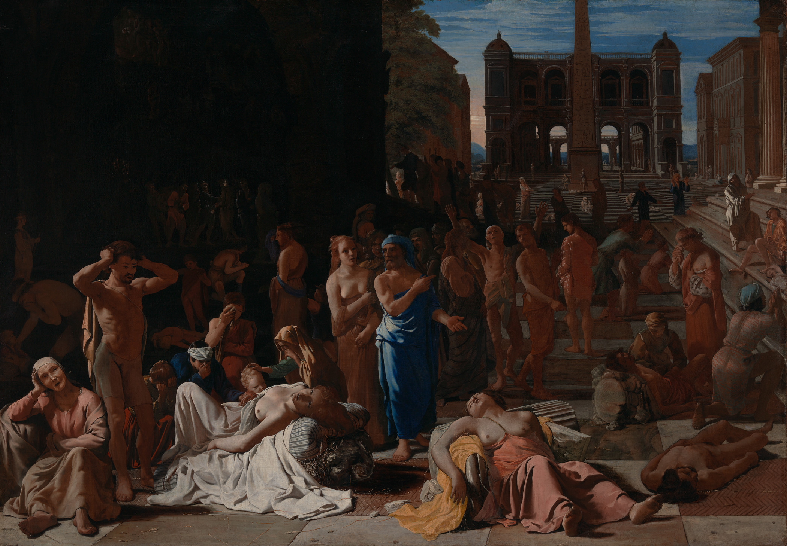

Plague of Athens (c. 430 - 429 BCE)

The Plague of Athens was a devastating epidemic that struck the city during the second year of the Peloponnesian War, in 430 BCE. At the time, Athens was fighting Sparta and its allies for control of the Greek world. The Athenian leader Pericles had encouraged people from the surrounding countryside to take shelter inside the city's walls, while Athens relied on its powerful navy to maintain access to food and supplies. However, the sudden arrival of so many people created overcrowded living conditions, making it easier for disease to spread.
The epidemic is believed to have reached Athens through Piraeus, the city's main port. It caused widespread suffering and killed an estimated 75,000 to 100,000 people, possibly around a quarter of the population. The exact cause of the disease remains unknown. Historians have suggested several possibilities, including typhus, smallpox, measles, and other infectious diseases. The symptoms described by ancient writers included fever, vomiting, extreme thirst, skin sores, and severe weakness.
One of the most important accounts of the epidemic comes from Thucydides, an Athenian historian who contracted the disease but survived. In his History of the Peloponnesian War, he described the symptoms and the suffering of those affected. He also recorded how the large number of deaths disrupted everyday life. Traditional burial practices became difficult to maintain, religious beliefs were shaken, and some people began to ignore laws and social customs because they feared they would not live long enough to face the consequences.
The plague also seriously weakened Athens during the war. Many soldiers and experienced sailors died, reducing the city's military strength. The outbreak disrupted supplies, damaged morale, and created political and social instability. The epidemic returned in later years, causing further deaths. Pericles himself died in 429 BCE, although the exact circumstances of his death are not described by Thucydides, and the disease is often associated with his final illness.
The long-term effects were significant. The loss of so many citizens weakened Athens politically and militarily, while the disruption of society affected wealth, public life, and the city's ability to continue the war. Athens did not immediately collapse, but the epidemic placed it under enormous pressure during an already difficult conflict. The city eventually lost the Peloponnesian War to Sparta in 404 BCE.
The Plague of Athens remains one of the most famous epidemics of the ancient world. It demonstrates how disease could influence the outcome of a war, affect political leadership, and transform the daily lives of an entire population. Despite centuries of research, historians have not reached a definitive conclusion about what caused the outbreak.